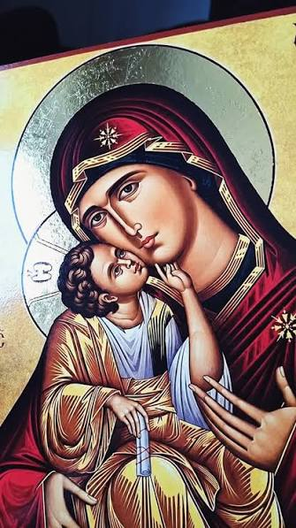
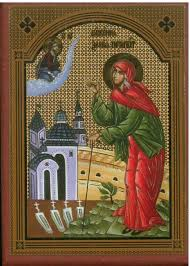
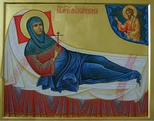
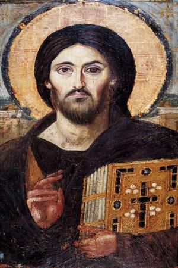

🏠
АКАТИСТИ
У име Оца и Сина и Светога Духа. Амин.

📖 Акатист Пресветој Богородици →
📖 Акатист св. Василију Остошком →
📖 Акатист св. Нектарију Егинском →

📖 Акатист св. Ксенији Петроградској →

📖 Акатист св. Марији Гатчинској →

📖 Акатист Свемогућем Богу при најезди искушења →
📖 Акатист Светој Петки →